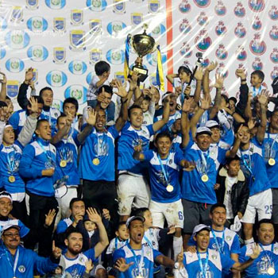

Fundacion del Club
 Comunicaciones nace el 16 de agosto de 1949 en la Ciudad de Guatemala, dando inicio a una historia llena de éxitos y grandezas en el fútbol nacional y centroamericano. Originalmente llamado Hospicio F.C. Luego España F.C., pero fue hasta en el año de 1949, cuando se fundó el Club, apoyado por el Ministro de Comunicaciones, Correos y Telégrafos, el Coronel Carlos Aldana Sandoval.
Comunicaciones nace el 16 de agosto de 1949 en la Ciudad de Guatemala, dando inicio a una historia llena de éxitos y grandezas en el fútbol nacional y centroamericano. Originalmente llamado Hospicio F.C. Luego España F.C., pero fue hasta en el año de 1949, cuando se fundó el Club, apoyado por el Ministro de Comunicaciones, Correos y Telégrafos, el Coronel Carlos Aldana Sandoval.
Comunicaciones disputó su primer partido el domingo 7 de agosto de 1949, en el Estadio Autonomía contra Aurora, empatando 2 a 2, partido correspondiente de la División Mayor. Luego, el jueves 18 de agosto del mismo año, en Puerto Cortés, Honduras. Comunicaciones logró su primer triunfo indiscutible en tierras hondureñas, al derrotar a la selección de aquella ciudad, por el marcador de 3 a 1.
A lo largo de sus 71 años de historia, el Club ha cosechado triunfos que le han hecho ganarse el respeto de equipos guatemaltecos e internacionales.
El primer tricampeonato
En 1950, Guatemala estrenaba el estadio Mateo Flores, y fue ahí donde 6 años más tarde ante más de 50,000 aficionados, que Comunicaciones alcanzaría su primer campeonato nacional. El recordado "Pinula" Contreras fue el héroe del equipo, al minuto 17 de juego recogió un rebote de pelota en el área de Municipal y convirtió el gol del campeonato. En aquel entonces el guardameta escarlata era Alfonso Vetorazzi. Uno de los destacados en aquel encuentro fue “Pishaco” Lemus, realizando el disparo que Vetorazzi no pudo contener para el gol Crema. El torneo para los Albos fue muy bueno ya que anotaron 43 goles y permitieron 19. Sacaron tres puntos al submonarca que fue la Universidad. Su portero Eduardo “Lora” Morales, fue el menos vencido.
 El segundo título del equipo llegó en el torneo de liga 1957-58, evento en el cual solo perdió un partido. Una vez más su artillería fue la mejor, con 38 tantos anotados, mientras que la defensa permitió solo 11 anotaciones. El portero Guillermo Gamboa, con el mote de “La Pantera”, sobresalió bajo los postes. Los Cremas le sacaron una diferencia de siete puntos al Municipal, que fue su más cercano perseguidor. Los Blancos derrotaron en el juego decisivo al Xelajú M.C. en el estadio Mario Camposeco. Los goles del Comunicaciones fueron obra de “Pacha” Duarte, Palomo y “Pinula” Contreras. El equipo base de este título fue el siguiente: Guillermo Gamboa “La Pantera” en el arco, Solares, “Ronco” Wellman, “Chato” Ramírez, Murcia, “Gato” Barrios, “Pinula” Contreras, Fredy “Pingo” Masella, Palomo, “Pacha” Duarte, Augusto “Culiche” Espinoza y “Pishaco” Lemus.
El segundo título del equipo llegó en el torneo de liga 1957-58, evento en el cual solo perdió un partido. Una vez más su artillería fue la mejor, con 38 tantos anotados, mientras que la defensa permitió solo 11 anotaciones. El portero Guillermo Gamboa, con el mote de “La Pantera”, sobresalió bajo los postes. Los Cremas le sacaron una diferencia de siete puntos al Municipal, que fue su más cercano perseguidor. Los Blancos derrotaron en el juego decisivo al Xelajú M.C. en el estadio Mario Camposeco. Los goles del Comunicaciones fueron obra de “Pacha” Duarte, Palomo y “Pinula” Contreras. El equipo base de este título fue el siguiente: Guillermo Gamboa “La Pantera” en el arco, Solares, “Ronco” Wellman, “Chato” Ramírez, Murcia, “Gato” Barrios, “Pinula” Contreras, Fredy “Pingo” Masella, Palomo, “Pacha” Duarte, Augusto “Culiche” Espinoza y “Pishaco” Lemus.
Para la temporada 1959-60, el club nuevamente estaba peleando otro título. En el partido final, Hugo “Tin Tan” Peña puso en ventaja a Municipal. Obdulio Pensamiento sirvió a “Pinula” Contreras quien batió al guardameta Moreno Calvo para igualar las acciones. Con esto bastaba para obtener el tercer título, pero Jerónimo Pericullo marcó un tiro de esquina bien aprovechado por Augusto “Culiche” Espinoza. Ese gol ponía un 2 a 1 definitivo y daba a los Cremas su primer tricampeonato.
Comunicaciones el histórico hexacampeón del 2015

-
El vigesimoquinto título Apertura 2012 - El Campeonato:
Con la continuidad de Ronald González, Comunicaciones repatrió a grandes jugadores como José Manuel Contreras y Dwight Pezzarossi. Tras acumular 50 puntos en 22 jornadas, el equipo del costarricense barrió a todos sus rivales en las finales. Marquense con un 5-2, Malacateco con un 2-1 y la final de clásico ante Municipal, se endosó un 0-3 en la ida, dejando a los rojos sin oportunidades para remontar en la vuelta. En una auténtica fiesta blanca, los cremas ganaron su título número 25 al vencer 1-0 a Municipal, quedando un resultado global de 4-0; ante más de 15,000 espectadores en el Estadio Cementos Progreso. La fiesta alba se trasladó al Monumento Obelisco de la zona 10 capitalina, donde el monarca guatemalteco presentó la copa y fue ovacionado por miles y miles de seguidores que se dieron cita para festejar un trofeo más. Con esto, los cremas se clasificaron a la Liga de Campeones de la Concacaf 2013-2014, por tercera vez en su historia.
-
El vigesimosexto título Apertura 2013 - El Bicampeonato:
El Club comunicaciones, el día 22 de junio de 2013 cerró en su estadio uno de los mejores torneos del albo, al lograr la suma de 45 puntos de 66 posibles tras lograr 13 victorias, 5 empates y 4 derrotas; 30 goles a favor y 14 en contra. Tras posicionarse en el primer lugar de la fase de clasificación, enfrentó en cuartos de final al Club Xelaju M.C. (octavo lugar del torneo), al que dejó en el camino por una buena diferencia, y en semifinales enfrentó al Club Deportivo Márquense; 2 buenos juegos le permitieron a los merengues jugar la final ante un Club Heredia, que tenía una increíble racha de 69 partidos sin perder en su casa, sin embargo el albo le gana por 2-1, para que en el partido de vuelta bastase un empate sin goles para que hubiese fiesta en el obelisco y lograr la tan ansiada corona "26" que deja al club Popular cerca de alcanzar al Archirrival Municipal.
-
El vigesimoséptimo título Clausura 2013 - El Tricampeonato:
El 14 de diciembre de 2013, luego de disputado el Partido de ida de la gran final contra el equipo de Heredia, Comunicaciones llegaba con una desventaja de (0-2), al minuto 26 de la primera parte el Club Heredia consigue en una asistencia de Enrique Miranda hacia Anderson Andrade el 0-1 y el (0-3) en la serie, al minuto.
La noche mágica para Comunicaciones parecía que no iba a existir, necesitaba 3 goles y era el minuto 17 de la segunda parte, pero esa noche si llegó y de la mano de un José Manuel Contreras inspirado llegó el 1-1 con un soberbio cabezazo, la afición blanca siguió con el aliento incondicional al Club y al minuto 22 del segundo tiempo con un balazo de más de 35 metros nuevamente Contreras anotaba y ponía el 2-1 para Comunicaciones y la esperanza en el corazón de todos los hinchas albos que se podía remontar. Pero quedaban tan solo 2 minutos para que el partido concluyera y la gente de Morales empezaba a festejar su primera corona cuando una asistencia de Contreras para Rodolfo Paolo Suárez quien con un tiro colocado desde fuera del área sepultó el 3-1 y el 3-3 en la serie desatando el delirio de la hinchada en todo el estadio.
Con esto se jugaron 2 tiempos extras y se llegó a la definición por Penales donde el juvenil Jorge Aparicio en la "Muerte Súbita" anotó el 4-3 y dio así al Club Comunicaciones la Ansiada Corona número 27 y su cuarto Tricampeonato en la Historia del Fútbol guatemalteco.
-
El vigésimo octavo título Clausura 2014 - El Tetracampeonato:
Comunicaciones se coronó campeón del Torneo Clausura 2014 y logró el segundo tetracampeonato de su historia tras vencer a Municipal 1 por 0 en el partido de vuelta (2 a 0 en el global) de la gran final que se disputó sin afición en el estadio nacional Mateo Flores debido al asesinato de Kevin Diaz hincha de Comunicaciones que murió apuñalado a manos de aficionados de la porra de Municipal, debido a una provocación que el mismo Kevin Díaz llevó a cabo en el Clásico que se disputó en el Estadio El Trébol en la temporada regular, debido a eso la Federación de Fútbol deicidio que los partidos entre Comunicaciones y Municipal debían jugarse a puerta cerrada. José Manuel Contreras se convirtió en el héroe blanco tras anotar en ambos duelos.
Comunicaciones ganó el título número 28 de su historia, ante su eterno rival Municipal en el clásico 280 del fútbol nacional. La última vez que Cremas y Rojos se enfrentaron en una final fue en el Torneo Apertura 2012, con victoria para los albos siendo el técnico blanco Ivan Franco Sopegno. Comunicaciones se convierte en el primer Equipo en ganar dos tetracampeonatos en la historia dándole otro motivo más para festejar a todo el pueblo Albo en el país.
-
El vigésimo noveno título Apertura 2014 - El Pentacampeonato:
De la mano de Willy Coito Oliveira, Comunicaciones gana con un Marcador de 2-1 el ansiado pentacampeonato jugado como local en el Estadio nacional Mateo Flores que debido a una restricción de parte de la Fedefut solo se habilitaron un poco más de 9,000 boletos sin aficionados visitantes, agotándose el mismo día que se pusieron a la venta. En un estadio con solo hinchas de Comunicaciones el club albo se impuso Ganando con un global de 3-2. Anotando por parte de Comunicaciones Joel Benítez y Agustín Herrera (2) y mientras que por Municipal anotaron Callorda y Jiménez. Comunicaciones logró el tan ansiado pentacampeonato que igualó la cantidad de Campeonatos ganados por Municipal (29), y también el récord de 5 campeonatos seguidos conseguido por Municipal. Los festejos en el Obelisco fueron hasta la Madrugada en donde hinchas de todos los rincones de la ciudad y hasta de los departamentos vecinos llegaron al punto de reunión en donde la fiesta en familia se desarrollaba para celebrar con los jugadores la hazaña obtenida.
-
El trigésimo título Clausura 2015 - El Hexacampeonato:
Nuevamente de la mano de Willy Coito Oliveira, el día sábado 23 de mayo de 2015 Comunicaciones consigue hacer historia en el fútbol de Guatemala ganando la ansiada "30" y se corona como el primer hexacampeón. Todo dio inicio 2 días antes cuando en un clima de fiesta la hinchada alba agotó las entradas puestas a disposición para el juego de vuelta.
 El ansiado día sábado llegó y con más de 15,000 aficionados cremas presentes, además de la lluvia que acompañó el juego, el cuadro crema se vio en problemas en el primer tiempo del juego ya que Maximiliano Callorda tras recibir el pase de Dennis López dentro del área chica del arco crema puso el 0-1 (2-1) global. Minutos más tarde el corazón de toda la hinchada crema se detuvo cuando el jugador de Municipal Carlos "El Pescado" Ruíz colocó de cabeza y con una ligera desviación del jugador albo Morales el 0-2 (2-2) global, poniendo un impensado empate que enviaba en ese momento la final a tiempos extras. En el segundo tiempo del juego, Comunicaciones salió más agresivo a la cancha intentando hacer daño con velocidad por las bandas del campo lográndolo por medio de una jugada que inició el mexicano Agustín Herrera que hizo un gran pase al defensor Rafa Morales quien asistió al "Moyo" Contreras que con una espectacular definición coloco el descuento en el juego y la locura en el estadio Nacional con el 3-2 global. Minutos más tarde en una jugada sobre la base de garra y resistencia física, el mexicano Herrera se llevó la marca de los defensores rojos y con un toque sutil por encima del arquero rojo definió el empate en el juego 2-2 (4-2) global. Fue una final de Infarto hasta el último minuto ya que Contreras en el minuto 89 en una equivocación, le regala el balón a Carlos Ruíz para este poner el 2-3 (4-3) global. A Municipal ya no le alcanzaron ni las ideas futbolísticas ni la capacidad física para mandar el juego a tiempos extras y luego de 3 minutos de reposición el árbitro pitó el final del juego.
El ansiado día sábado llegó y con más de 15,000 aficionados cremas presentes, además de la lluvia que acompañó el juego, el cuadro crema se vio en problemas en el primer tiempo del juego ya que Maximiliano Callorda tras recibir el pase de Dennis López dentro del área chica del arco crema puso el 0-1 (2-1) global. Minutos más tarde el corazón de toda la hinchada crema se detuvo cuando el jugador de Municipal Carlos "El Pescado" Ruíz colocó de cabeza y con una ligera desviación del jugador albo Morales el 0-2 (2-2) global, poniendo un impensado empate que enviaba en ese momento la final a tiempos extras. En el segundo tiempo del juego, Comunicaciones salió más agresivo a la cancha intentando hacer daño con velocidad por las bandas del campo lográndolo por medio de una jugada que inició el mexicano Agustín Herrera que hizo un gran pase al defensor Rafa Morales quien asistió al "Moyo" Contreras que con una espectacular definición coloco el descuento en el juego y la locura en el estadio Nacional con el 3-2 global. Minutos más tarde en una jugada sobre la base de garra y resistencia física, el mexicano Herrera se llevó la marca de los defensores rojos y con un toque sutil por encima del arquero rojo definió el empate en el juego 2-2 (4-2) global. Fue una final de Infarto hasta el último minuto ya que Contreras en el minuto 89 en una equivocación, le regala el balón a Carlos Ruíz para este poner el 2-3 (4-3) global. A Municipal ya no le alcanzaron ni las ideas futbolísticas ni la capacidad física para mandar el juego a tiempos extras y luego de 3 minutos de reposición el árbitro pitó el final del juego.